Architecture
The files in docs/diagrams are PlantUML sources that document the architecture of
pyArchimate. They include both classic UML views (class, component, object, deployment, etc.)
and derived C4-style diagrams that illustrate how the project is composed.
Available diagrams:
The rendered PNG artifacts live next to the PlantUML sources (docs/diagrams/*.png) and are overwritten each time you run scripts/render_diagrams.sh. Including them in the docs allows the website to display the diagrams without requiring a PlantUML renderer on the client side.
context.puml/c4_context.pumlContext diagram showing how pyArchimate integrates with external tooling, developers, and the ArchiMate standard.
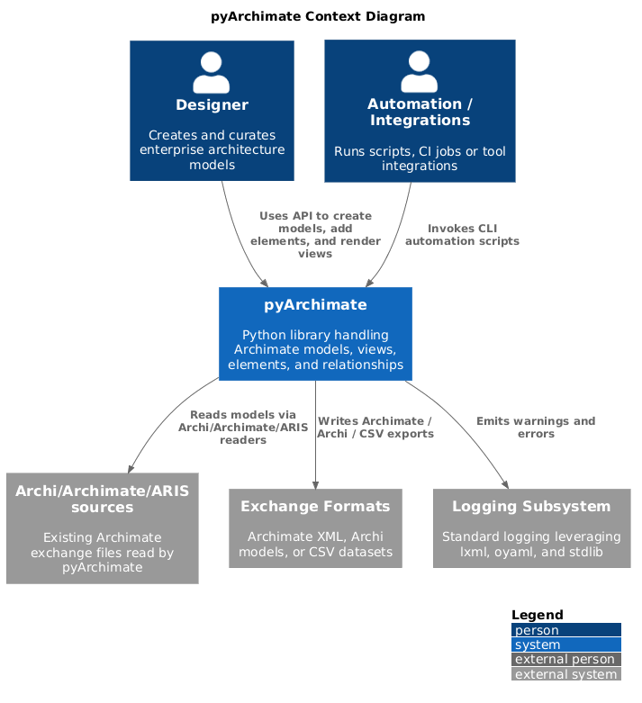
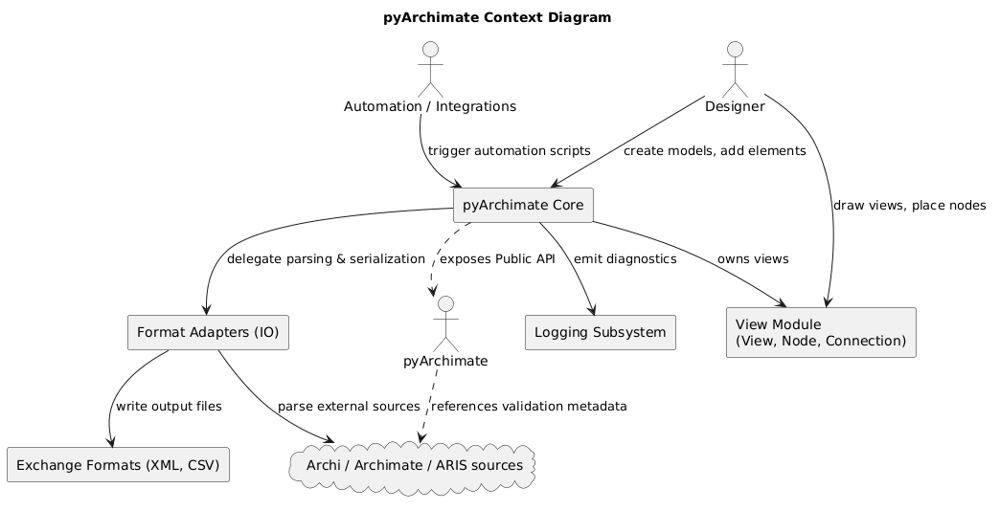
package.puml/c4_container.pumlContainer diagram showing how pyArchimate integrates with external tooling, developers, and the ArchiMate standard.
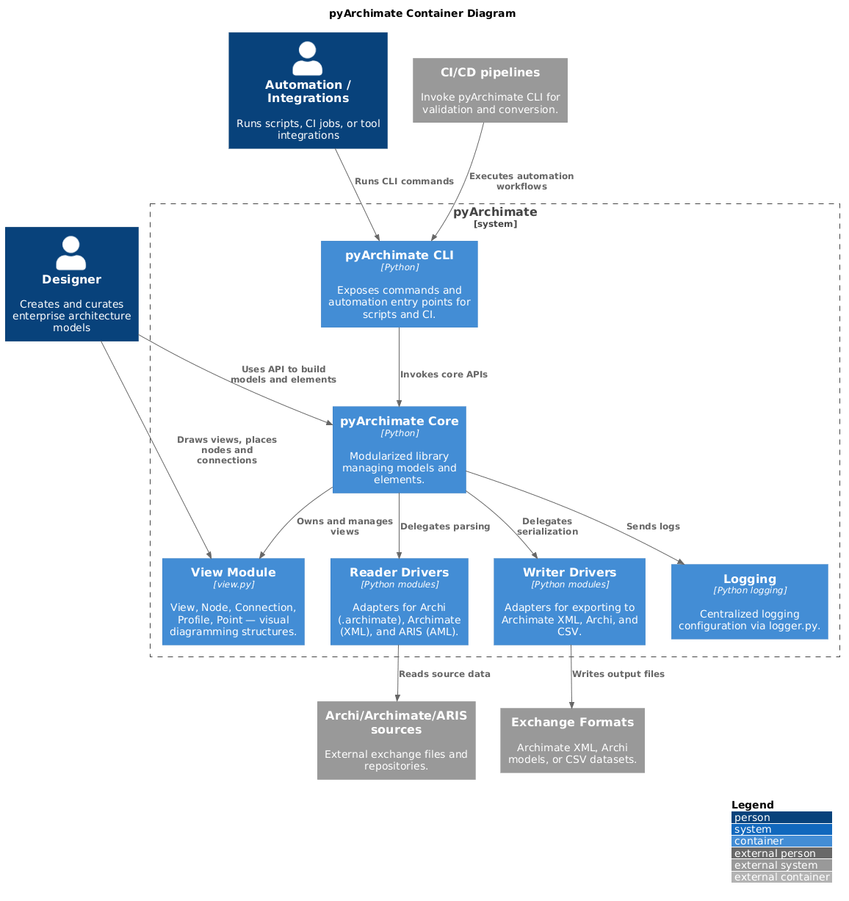
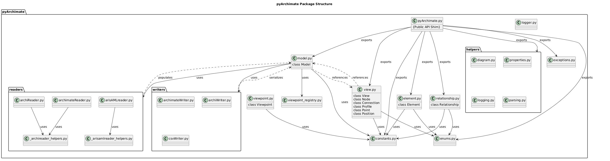
component.puml/c4_component.pumlComponent diagrams that highlight the major modules such as the model core, readers, and writers.
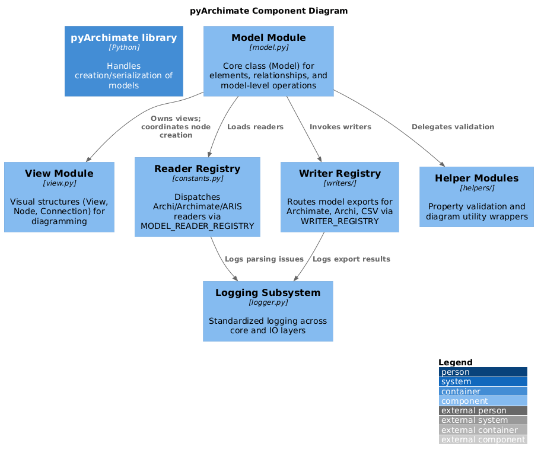
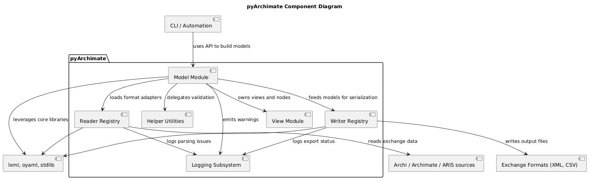
deployment.puml/c4_deployment.pumlDeployment diagrams describing the runtime environment, processing steps, and how the PlantUML renderer/slim server might be hosted.
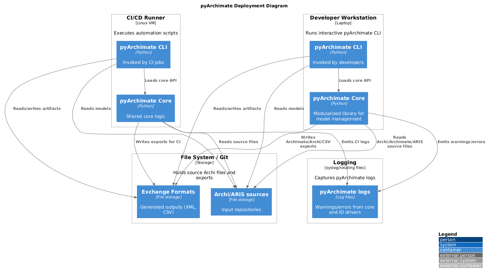
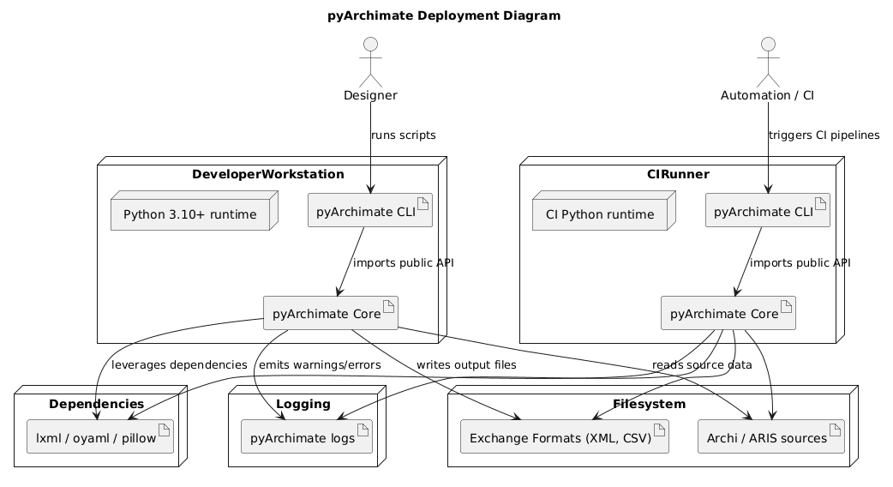
class.puml/object.puml/composite.pumlUML views that sketch the static structure of Model, Element, Relationship, and the associated helper utilities.
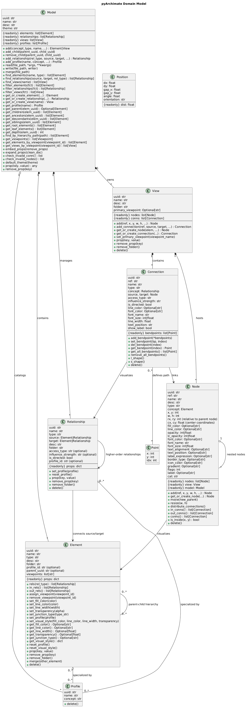
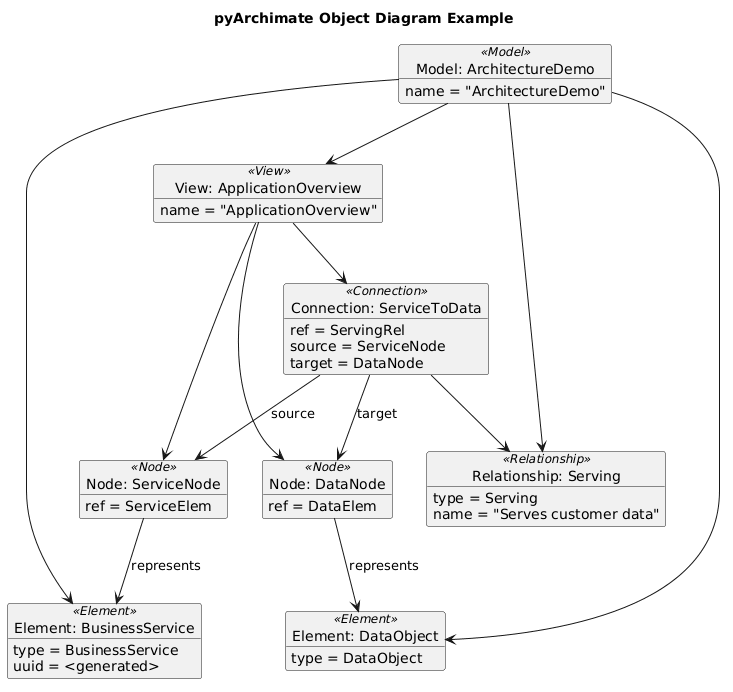
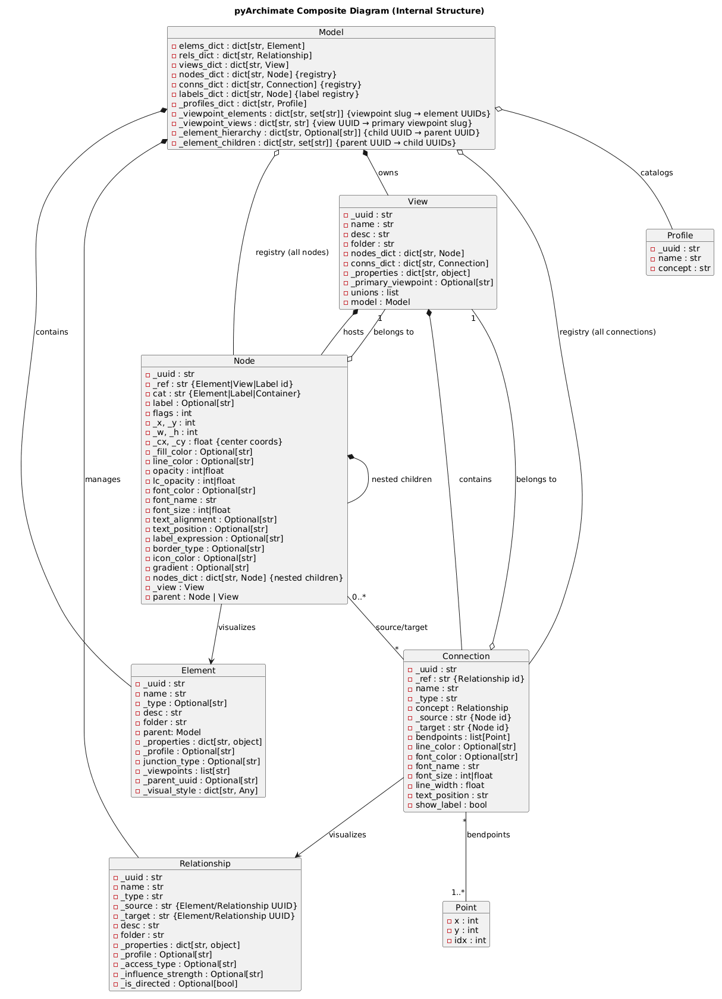
state.pumlState diagram illustrating the Model lifecycle as it moves from empty through populated, view ready, serialized, and invalid states when validations fail.
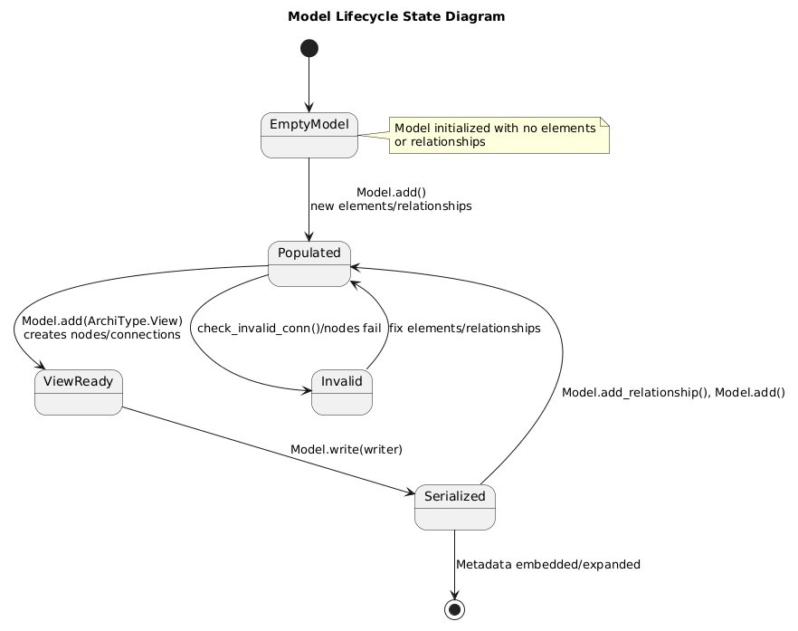
sequence.pumlSequence diagram depicting how the CLI/script invokes Model.read, how readers populate Elements/Relationships, and how writers serialize the resulting model.
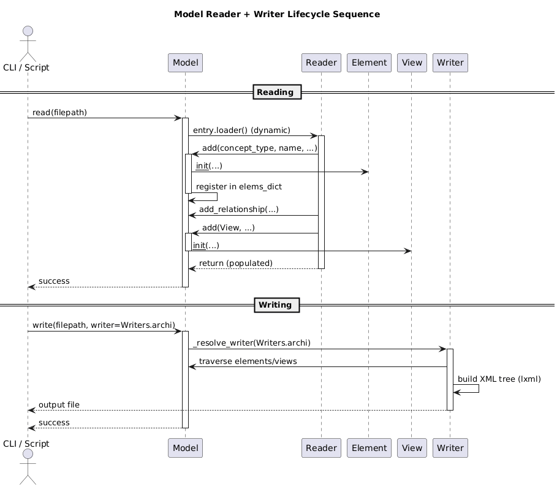
activity.pumlActivity diagram of view construction: creating models, adding elements/relationships, building views, and writing outputs.
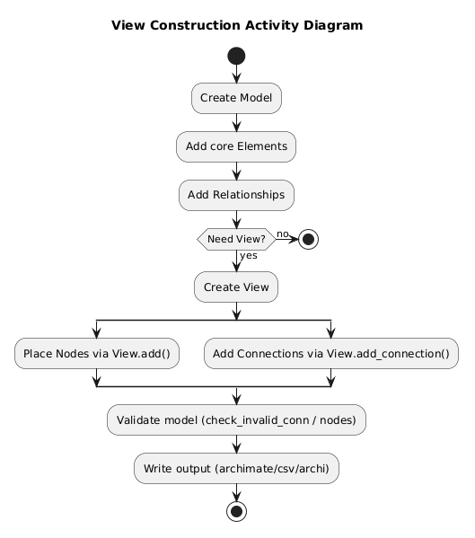
communication.pumlCommunication diagram showing runtime message paths between Model, Element, Relationship, View, Node, and Connection during CRUD operations.
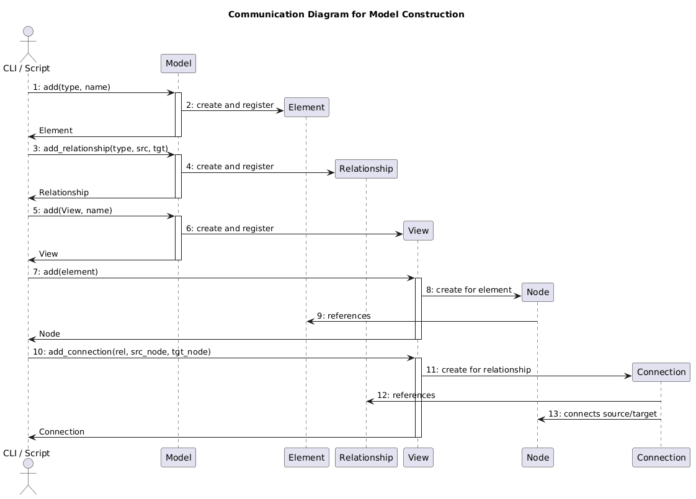
Rendering
To regenerate the PNG artifacts locate the PlantUML renderer and run the helper script:
`
./scripts/render_diagrams.sh
`
The script encodes every PlantUML source, hits ${PLANTUML_SERVER:-https://www.plantuml.com/plantuml}, follows redirects, and retries slow transfers so the loop can finish. Set PLANTUML_SERVER if you want to target a different host (for example export PLANTUML_SERVER=http://host.containers.internal:8080), otherwise it defaults to the public PlantUML service.
If you add or refactor diagrams, update this document with a short explanation of the new view and add the source file to the script so it continues to be rendered automatically.